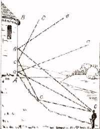
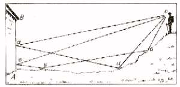
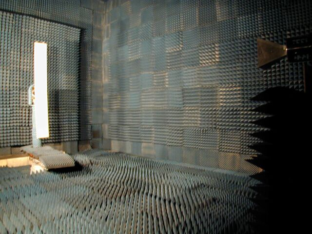
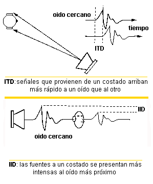

3. ECOS Y REVERBERACIONES
Normalmente no somos conscientes de la gran cantidad de energía que proviene de las reflexiones. Incluso en el exterior, una cantidad apreciable proviene de reflexiones del suelo, de las estructuras que nos rodean y de la vegetación. Nosotros solo nos damos cuenta de estas reflexiones cuando el retardo es mayor que 30 o 50 ms; en ese tiempo, somos conscientes de este retardo.
EL ECO
En la mitología griega, eco significa ninfa de la montaña. El dios supremo Zeus la persuadió de entretener a su mujer, Hera, con una charla incesante. Irritada, Hera le quitó a Eco el poder de hablar, dejándole solo la facultad de repetir la última sílaba de cada palabra que oyera. Un amor no correspondido por el bello Narciso hizo que Eco languideciera hasta que solo quedó de ella su voz.
Las ondas sonoras sufren una reflexión parcial al chocar con la superficie de un medio de distinta densidad. Esto causa una pérdida de energía vibrante y, en consecuencia, de amplitud; al disminuir esta, la intensidad del sonido se hace menor. Las reflexiones sucesivas en capas atmosféricas de densidad diversa amortiguan el sonido y limitan su radio de percepción.
Cuando el sonido se refleja en un sólido, como un muro, la energía de la onda reflejada es la misma que la incidente, y la pérdida de intensidad corresponde al aumento de distancia.
El fenómeno llamado ECO ocurre cuando la onda incidente y la reflejada impresionan el oído del mismo observador con suficiente intermitencia para que se perciban ambos sonidos.
El intervalo de tiempo mínimo para que nuestro oído perciba sonidos musicales es 0.1 segundos y 0.07 segundos para sonidos secos (palabras). Considerando la velocidad del sonido a 20ºC (340 m/s), el espacio que debe recorrer la onda en su ida y vuelta al obstáculo es: s = 0.1 x 340 = 34m para sonidos musicales, y s = 0.07 x 340 = 23.8m para sonidos secos. La distancia mínima entre el oído y la superficie reflectora debe ser alrededor de 17m para que se produzca eco.
|  |  Fig.2. Existe Eco. |
|---|---|
| Fig.1. No existe eco. |
El eco puede presentarse como un problema cuando se superponen los sonidos incidentes y reflejados en las paredes, dando lugar a una interferencia conocida como reverberación, lo que puede dificultar la audición.
LA REVERBERACIÓN
La reverberación es el fenómeno de sucesivas reflexiones del sonido en distintas superficies. Se produce cuando las ondas reflejadas llegan al oyente antes de la extinción de la onda directa. Este fenómeno es importante en cualquier recinto donde se propague una onda sonora. El oyente no solo percibe la onda directa, sino las sucesivas reflexiones que se producen en las distintas superficies del recinto. Controlando adecuadamente este efecto, se mejora la acústica de lugares como teatros y salas de conciertos.
El tiempo de reverberación es el tiempo que transcurre hasta que la intensidad del sonido se reduce a una millonésima de su valor inicial. Este tiempo no debe ser demasiado largo, ya que puede causar molestias, ni demasiado corto, ya que puede impedir que el auditorio capte los sonidos en una gran sala de espectáculos. El tiempo óptimo de reverberación es de 1 a 2 segundos.
Se evita este fenómeno mediante cuerpos absorbentes del sonido, que reducen la intensidad en cada reflexión.
CÁMARA ANECOICA
Existen habitaciones llamadas anecoicas (Fig.3.) que absorben toda la energía de las reflexiones, permitiendo escuchar el sonido tal y como se produce. Muchas personas se sorprenden de lo secos que suenan los sonidos en estas cámaras.
Estas cámaras están diseñadas para minimizar los efectos del sonido y el ruido externo mediante aislamiento físico, filtros acústicos en los conductos de ventilación y muros anchos. Las superficies están cubiertas con material absorbente del sonido, como fibra de vidrio o lana mineral.
La reflexión del sonido se puede reducir considerablemente en estas habitaciones, simulando condiciones acústicas de un espacio libre no obstruido.

Fig.3. Cámara anecoica.
LOCALIZACIÓN DEL SONIDO
Puesto que el sonido reflejado es común, cabe preguntarnos por qué estas reflexiones no interfieren con nuestra habilidad de localizar el sonido. Nos adaptamos rápidamente a los nuevos entornos, y nuestro sistema auditivo usa mecanismos para suprimirlas.
La localización se basa en qué oreja percibe primero el sonido, conocido como el efecto de procedencia o la ley del primer frente de onda. Aunque la reverberación es muy pronunciada, las reflexiones tienen poco peso a la hora de localizar el sonido.
La clásica “teoría dúplex” (Teoría de Rayleigh) enfatiza el rol de dos componentes fundamentales: la diferencia interaural en tiempo (ITD) y la diferencia interaural de intensidad (IID). Sin embargo, esta teoría es incompleta, ya que no considera la capacidad de localizar sonidos sobre el plano medio vertical.

Fig. 4. Componentes fundamentales de la señal de audio que llega a los oídos (Teoría de Rayleigh).
Filtrando un sonido arbitrario con filtros HRTF (Head Related Transfer Functions), se puede imponer una característica espacial al sonido, permitiendo que parezca emanar de una posición deseada en el espacio.
La localización depende de factores como:
- Contenido espectral de la fuente original.
- Ancho de banda de la fuente.
- Diferencias entre la HRTF del usuario y de la persona de la cual se tomaron las mediciones.